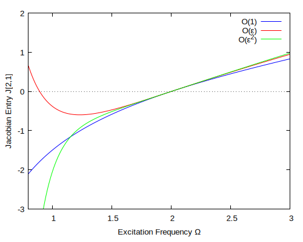

\( \DeclareMathOperator{\abs}{abs} \newcommand{\ensuremath}[1]{\mbox{$#1$}} \)
| --> |
kill(all)$ derivabbrev:true$ derivsubst:true$ n:3$ Ts:makelist(concat(T,i), i, 0, n)$ Ts1:makelist(concat(T,i), i, 1, n)$ depends(makelist(concat(x,i), i, 0, n), Ts)$ depends(makelist(concat(A,i), i, 0, n), Ts1)$ depends(makelist(concat(B,i), i, 0, n), Ts1)$ x:sum(concat(x,i)·ε··i, i, 0, n)$ for i:0 thru n do(eval_string(concat("gradef(T", i, ",t,ε**", i, ")"))); |
\[\]\[\tag{%o10} \ensuremath{\mathrm{done}}\]
| --> | meth:"EMS"$ /* Choose "MMS" or "EMS" */ |
1 Choose Formulation (Comment one of the following out to get results for the other)
| --> |
assume(Ω>0)$ assume(ω0>0)$ if meth="MMS" then block(σ:sum(concat(ω,i)·concat(T,i), i, 0, n), eom(X):=expand(diff(X,t,2) + ε·2·ζ·ω0·diff(X,t) + ω0··2·X − ε·F·cos(σ)), disp("Choosing MMS")) else block(σ:Ω·T0, eom(X):=expand(diff(X,t,2) + ε·2·ζ·ω0·diff(X,t) + Ω··2·X + ε·(ω0··2−Ω··2)·X− ε·F·cos(σ)), disp("Choosing EMS"))$ |
\[\]\[\mbox{}\\"Choosing EMS"\]
2 Ordered Equations
| --> | for i:0 thru n do(eval_string(concat("eom",i,":coeff(eom(x),ε,",i,");"))); /* eom0, eom1, ... are the ordered equations of motion */ |
\[\]\[\tag{%o15} \ensuremath{\mathrm{done}}\]
2.1 O(1), Zeroth Order
| --> | O0sol:x0=A0·cos(σ)+B0·sin(σ); |
\[\]\[\tag{0so} \ensuremath{\mathrm{x0}}\mathop{=}\ensuremath{\mathrm{B0}} \sin{\left( \ensuremath{\mathrm{T0}} \Omega \right) }\mathop{+}\ensuremath{\mathrm{A0}} \cos{\left( \ensuremath{\mathrm{T0}} \Omega \right) }\]
2.2 O(ε), First Order
| --> |
O1eom:subst(O0sol, eom1)$ O1eom:ev(O1eom,nouns); O1rhs:−subst([x1=0], O1eom)$ O1lhs:O1eom+O1rhs$ |
\[\]\[\tag{1eo} \left( \ensuremath{\mathrm{B0}} \sin{\left( \ensuremath{\mathrm{T0}} \Omega \right) }\mathop{+}\ensuremath{\mathrm{A0}} \cos{\left( \ensuremath{\mathrm{T0}} \Omega \right) }\right) {{\ensuremath{\mathrm{\omega 0}}}^{2}}\mathop{+}2 \left( \ensuremath{\mathrm{B0}} \Omega \cos{\left( \ensuremath{\mathrm{T0}} \Omega \right) }\mathop{-}\ensuremath{\mathrm{A0}} \Omega \sin{\left( \ensuremath{\mathrm{T0}} \Omega \right) }\right) \zeta \, \ensuremath{\mathrm{\omega 0}}\mathop{+}2 \left( \left( {{\ensuremath{\mathrm{B0}}}_{\ensuremath{\mathrm{T1}}}}\right) \Omega \cos{\left( \ensuremath{\mathrm{T0}} \Omega \right) }\mathop{-}\left( {{\ensuremath{\mathrm{A0}}}_{\ensuremath{\mathrm{T1}}}}\right) \Omega \sin{\left( \ensuremath{\mathrm{T0}} \Omega \right) }\right) \mathop{-}{{\Omega }^{2}} \left( \ensuremath{\mathrm{B0}} \sin{\left( \ensuremath{\mathrm{T0}} \Omega \right) }\mathop{+}\ensuremath{\mathrm{A0}} \cos{\left( \ensuremath{\mathrm{T0}} \Omega \right) }\right) \mathop{-}F \cos{\left( \ensuremath{\mathrm{T0}} \Omega \right) }\mathop{+}\ensuremath{\mathrm{x1}} {{\Omega }^{2}}\mathop{+}{{\ensuremath{\mathrm{x1}}}_{\ensuremath{\mathrm{T0}}\ensuremath{\mathrm{T0}}}}\]
| --> |
if meth="MMS" then O1H1:factor(integrate(O1rhs·exp(−%i·ω0·T0), T0, 0, 2·%pi/ω0)·ω0/%pi) else O1H1:factor(integrate(O1rhs·exp(−%i·Ω·T0), T0, 0, 2·%pi/Ω)·Ω/%pi)$ O1st:expand(trigreduce(solve([realpart(O1H1),imagpart(O1H1)], diff([A0,B0],T1))[1])); |
\[\]\[\tag{1s} \left[ {{\ensuremath{\mathrm{A0}}}_{\ensuremath{\mathrm{T1}}}}\mathop{=}\frac{\ensuremath{\mathrm{B0}} {{\ensuremath{\mathrm{\omega 0}}}^{2}}}{2 \Omega }\mathop{-}\ensuremath{\mathrm{A0}} \zeta \, \ensuremath{\mathrm{\omega 0}}\mathop{-}\frac{\ensuremath{\mathrm{B0}} \Omega }{2}\mathop{,}{{\ensuremath{\mathrm{B0}}}_{\ensuremath{\mathrm{T1}}}}\mathop{=}\mathop{-}\left( \frac{\ensuremath{\mathrm{A0}} {{\ensuremath{\mathrm{\omega 0}}}^{2}}}{2 \Omega }\right) \mathop{-}\ensuremath{\mathrm{B0}} \zeta \, \ensuremath{\mathrm{\omega 0}}\mathop{+}\frac{\ensuremath{\mathrm{A0}} \Omega }{2}\mathop{+}\frac{F}{2 \Omega }\right] \]
| --> |
J0:factor(jacobian(subst(O1st,diff([A0,B0],T1)), [A0,B0])); F0:map(rhs, subst([A0=0,B0=0],O1st)); |
\[\]\[\tag{} \begin{pmatrix}\mathop{-}\left( \zeta \, \ensuremath{\mathrm{\omega 0}}\right) & \frac{\left( \ensuremath{\mathrm{\omega 0}}\mathop{-}\Omega \right) \, \left( \ensuremath{\mathrm{\omega 0}}\mathop{+}\Omega \right) }{2 \Omega }\\ \mathop{-}\left( \frac{\left( \ensuremath{\mathrm{\omega 0}}\mathop{-}\Omega \right) \, \left( \ensuremath{\mathrm{\omega 0}}\mathop{+}\Omega \right) }{2 \Omega }\right) & \mathop{-}\left( \zeta \, \ensuremath{\mathrm{\omega 0}}\right) \end{pmatrix}\]
\[\]\[\tag{} \left[ 0\mathop{,}\frac{F}{2 \Omega }\right] \]
| --> |
O1sol:subst([%k1=B1,%k2=A1], ode2(O1lhs−expand(exponentialize(subst(O1st,O1rhs))), x1, T0))$ O1sol:subst([A1=0,B1=0], O1sol)$ /* We set this to zero for the Method of Reconstitution */ |
\[\]\[(\% i1) \]\[(\% i1) (\% i1) (\% i1) (\% i1) (\% i1) (\% i1) (\% i1) (\% i1) (\% i1) (\% i1) (\% i1) (\% i1) (\% i1) (\% i1) (\% i1) (\% i1) (\% i1) (\% i1) (\% i1) (\% i1) (\% i1) (\% i1) (\% i1) (\% i1) (\% i1) (\% i1) (\% i1) (\% i1) (\% i1) (\% i1) (\% i1) (\% i1) (\% i1) (\% i1) (\% i1) (\% i1) \]
| --> |
O01sol:append([O0sol,O1sol],O1st); O01sol_:[O0sol,O1sol]$ |
\[\]\[\tag{01so} \]
2.3 O(ε^2), Second Order
| --> |
O2eom:subst(O01sol, eom2)$ O2eom:subst(O01sol,ev(O2eom,nouns))$ O2eom:subst(O01sol,ev(O2eom,nouns))$ O2eom:factor(exponentialize(ev(O2eom,nouns)))$ O2rhs:−subst([x2=0], O2eom)$ O2lhs:expand(O2eom+O2rhs)$ |
| --> |
if meth="MMS" then O2H1:factor(integrate(O2rhs·exp(−%i·ω0·T0), T0, 0, 2·%pi/ω0)·ω0/%pi) else O2H1:factor(integrate(O2rhs·exp(−%i·Ω·T0), T0, 0, 2·%pi/Ω)·Ω/%pi)$ O2st:trigreduce(solve([realpart(O2H1),imagpart(O2H1)], diff([A0,B0],T2)))[1]; |
\[\]\[\tag{2s} \]
| --> |
J1:jacobian(subst(O2st, diff([A0,B0],T2)), [A0,B0]); F1:map(rhs, subst([A0=0,B0=0], O2st)); |
\[\]\[\tag{} \begin{pmatrix}0 & \frac{\mathop{-}{{\ensuremath{\mathrm{\omega 0}}}^{4}}\mathop{+}{{\Omega }^{2}} \left( 2\mathop{-}4 {{\zeta }^{2}}\right) {{\ensuremath{\mathrm{\omega 0}}}^{2}}\mathop{-}{{\Omega }^{4}}}{8 {{\Omega }^{3}}}\\ \frac{{{\ensuremath{\mathrm{\omega 0}}}^{4}}\mathop{+}{{\Omega }^{2}} \left( 4 {{\zeta }^{2}}\mathop{-}2\right) {{\ensuremath{\mathrm{\omega 0}}}^{2}}\mathop{+}{{\Omega }^{4}}}{8 {{\Omega }^{3}}} & 0\end{pmatrix}\]
\[\]\[\tag{} \left[ \frac{F \zeta \, \ensuremath{\mathrm{\omega 0}}}{4 {{\Omega }^{2}}}\mathop{,}\frac{F {{\Omega }^{2}}\mathop{-}F {{\ensuremath{\mathrm{\omega 0}}}^{2}}}{8 {{\Omega }^{3}}}\right] \]
| --> |
O2sol:subst([%k2=A2,%k1=B2], ode2(O2lhs−expand(exponentialize(subst(O2st, O2rhs))), x2, T0))$ O2sol:subst([A2=0,B2=0], O2sol)$ /* We set this to zero for the Method of Reconstitution */ |
| --> | O012sol:append(O01sol,O2st,[O2sol]); |
\[\]\[\tag{012so} \]
2.3.1 Incomplete Method
| --> | O2eom:subst(O01sol_, eom2)$ |
\[\]\[\tag{%o66} 2 \left( \left( {{\ensuremath{\mathrm{B0}}}_{\ensuremath{\mathrm{T1}}}}\right) \sin{\left( \ensuremath{\mathrm{T0}} \Omega \right) }\mathop{+}\left( {{\ensuremath{\mathrm{A0}}}_{\ensuremath{\mathrm{T1}}}}\right) \cos{\left( \ensuremath{\mathrm{T0}} \Omega \right) }\right) \zeta \, \ensuremath{\mathrm{\omega 0}}\mathop{+}2 \left( \left( {{\ensuremath{\mathrm{B0}}}_{\ensuremath{\mathrm{T2}}}}\right) \Omega \cos{\left( \ensuremath{\mathrm{T0}} \Omega \right) }\mathop{-}\left( {{\ensuremath{\mathrm{A0}}}_{\ensuremath{\mathrm{T2}}}}\right) \Omega \sin{\left( \ensuremath{\mathrm{T0}} \Omega \right) }\right) \mathop{+}\left( {{\ensuremath{\mathrm{B0}}}_{\ensuremath{\mathrm{T1}}\ensuremath{\mathrm{T1}}}}\right) \sin{\left( \ensuremath{\mathrm{T0}} \Omega \right) }\mathop{+}\left( {{\ensuremath{\mathrm{A0}}}_{\ensuremath{\mathrm{T1}}\ensuremath{\mathrm{T1}}}}\right) \cos{\left( \ensuremath{\mathrm{T0}} \Omega \right) }\mathop{+}\ensuremath{\mathrm{x2}} {{\Omega }^{2}}\mathop{+}{{\ensuremath{\mathrm{x2}}}_{\ensuremath{\mathrm{T0}}\ensuremath{\mathrm{T0}}}}\]
| --> |
O2eom:subst(O01sol_, eom2)$ O2eom:subst(diff([A0=0,B0=0], T1), ev(O2eom, nouns))$ O2rhs:−subst([x2=0], O2eom)$ O2lhs:expand(O2eom+O2rhs)$ |
| --> |
if meth="MMS" then O2H1:factor(integrate(O2rhs·exp(−%i·ω0·T0), T0, 0, 2·%pi/ω0)·ω0/%pi) else O2H1:factor(integrate(O2rhs·exp(−%i·Ω·T0), T0, 0, 2·%pi/Ω)·Ω/%pi)$ O2st_:trigreduce(solve([realpart(O2H1),imagpart(O2H1)], diff([A0,B0],T2)))[1]; |
\[\]\[\tag{2st\} \left[ {{\ensuremath{\mathrm{A0}}}_{\ensuremath{\mathrm{T2}}}}\mathop{=}0\mathop{,}{{\ensuremath{\mathrm{B0}}}_{\ensuremath{\mathrm{T2}}}}\mathop{=}0\right] \]
| --> |
J1_:jacobian(subst(O2st_, diff([A0,B0],T2)), [A0,B0]); F1_:map(rhs, subst([A0=0,B0=0], O2st_)); |
\[\]\[\tag{1\} \begin{pmatrix}0 & 0\\ 0 & 0\end{pmatrix}\]
\[\]\[\tag{1\} \left[ 0\mathop{,}0\right] \]
| --> |
O2sol_:subst([%k2=A2,%k1=B2], ode2(O2lhs−expand(exponentialize(subst(O2st_, O2rhs))), x2, T0))$ O2sol_:subst([A2=0,B2=0], O2sol)$ /* We set this to zero for the Method of Reconstitution */ |
| --> |
O012solinc:append(O01sol_,O2st_,[O2sol_])$ O012solinc_:append(O01sol_,[O2sol_]); |
\[\]\[\tag{012solinc\} \left[ \ensuremath{\mathrm{x0}}\mathop{=}\ensuremath{\mathrm{B0}} \sin{\left( \ensuremath{\mathrm{T0}} \Omega \right) }\mathop{+}\ensuremath{\mathrm{A0}} \cos{\left( \ensuremath{\mathrm{T0}} \Omega \right) }\mathop{,}\ensuremath{\mathrm{x1}}\mathop{=}0\mathop{,}\ensuremath{\mathrm{x2}}\mathop{=}0\right] \]
2.4 O(ε^3), Third Order
| --> |
O3eom:subst(O012sol,eom3)$ O3eom:subst(O012sol,ev(O3eom,nouns))$ O3eom:factor(exponentialize(subst(O012sol,ev(O3eom,nouns))))$ O3rhs:−factor(subst(x3=0,O3eom))$ O3lhs:expand(O3eom+O3rhs)$ |
| --> |
if meth="MMS" then O3H1:factor(integrate(O3rhs·exp(−%i·ω0·T0), T0, 0, 2·%pi/ω0)·ω0/%pi) else O3H1:factor(integrate(O3rhs·exp(−%i·Ω·T0), T0, 0, 2·%pi/Ω)·Ω/%pi)$ O3st:trigreduce(solve([realpart(O3H1),imagpart(O3H1)], diff([A0,B0],T3))[1]); |
\[\]\[\tag{3s} \left[ {{\ensuremath{\mathrm{A0}}}_{\ensuremath{\mathrm{T3}}}}\mathop{=}\mathop{-}\left( \ensuremath{\mathrm{B0}}\, \ensuremath{\mathrm{\omega 3}}\right) \mathop{,}{{\ensuremath{\mathrm{B0}}}_{\ensuremath{\mathrm{T3}}}}\mathop{=}\frac{2 \ensuremath{\mathrm{A0}} {{\ensuremath{\mathrm{\omega 0}}}^{2}} \ensuremath{\mathrm{\omega 3}}\mathop{-}F\, \ensuremath{\mathrm{\omega 2}}}{2 {{\ensuremath{\mathrm{\omega 0}}}^{2}}}\right] \]
| --> |
J2:jacobian(map(rhs, O3st), [A0,B0]); F2:subst([A0=0,B0=0], map(rhs,O3st)); |
\[\]\[\tag{} \begin{pmatrix}0 & \mathop{-}\ensuremath{\mathrm{\omega 3}}\\ \ensuremath{\mathrm{\omega 3}} & 0\end{pmatrix}\]
\[\]\[\tag{} \left[ 0\mathop{,}\mathop{-}\left( \frac{F\, \ensuremath{\mathrm{\omega 2}}}{2 {{\ensuremath{\mathrm{\omega 0}}}^{2}}}\right) \right] \]
| --> |
O3sol:subst([%k2=A3,%k1=B3], ode2(O3lhs−expand(exponentialize(subst(O3st, O3rhs))), x3, T0))$ O3sol:subst([A3=0,B3=0], O3sol)$ /* We set this to zero for the Method of Reconstitution */ |
| --> | O0123sol:append(O012sol,O3st,[O3sol])$ |
2.4.1 Incomplete Method
| --> |
O3eom:subst(O012solinc_,eom3)$ O3eom:subst(append(diff([A0=0,B0=0], T1), diff([A0=0,B0=0], T2)), ev(O3eom, nouns))$ O3rhs:−factor(subst(x3=0,O3eom))$ O3lhs:expand(O3eom+O3rhs)$ |
| --> |
if meth="MMS" then O3H1:factor(integrate(O3rhs·exp(−%i·ω0·T0), T0, 0, 2·%pi/ω0)·ω0/%pi) else O3H1:factor(integrate(O3rhs·exp(−%i·Ω·T0), T0, 0, 2·%pi/Ω)·Ω/%pi)$ O3st:trigreduce(solve([realpart(O3H1),imagpart(O3H1)], diff([A0,B0],T3))[1]); |
\[\]\[\tag{3s} \left[ {{\ensuremath{\mathrm{A0}}}_{\ensuremath{\mathrm{T3}}}}\mathop{=}\mathop{-}\left( \ensuremath{\mathrm{B0}}\, \ensuremath{\mathrm{\omega 3}}\right) \mathop{-}\frac{\ensuremath{\mathrm{B0}}\, \ensuremath{\mathrm{\omega 1}}\, \ensuremath{\mathrm{\omega 2}}}{\ensuremath{\mathrm{\omega 0}}}\mathop{-}\ensuremath{\mathrm{A0}} \zeta \, \ensuremath{\mathrm{\omega 2}}\mathop{,}{{\ensuremath{\mathrm{B0}}}_{\ensuremath{\mathrm{T3}}}}\mathop{=}\ensuremath{\mathrm{A0}}\, \ensuremath{\mathrm{\omega 3}}\mathop{+}\frac{\ensuremath{\mathrm{A0}}\, \ensuremath{\mathrm{\omega 1}}\, \ensuremath{\mathrm{\omega 2}}}{\ensuremath{\mathrm{\omega 0}}}\mathop{-}\ensuremath{\mathrm{B0}} \zeta \, \ensuremath{\mathrm{\omega 2}}\right] \]
| --> |
J2:jacobian(map(rhs, O3st), [A0,B0]); F2:subst([A0=0,B0=0], map(rhs,O3st)); |
\[\]\[\tag{} \begin{pmatrix}\mathop{-}\left( \zeta \, \ensuremath{\mathrm{\omega 2}}\right) & \mathop{-}\ensuremath{\mathrm{\omega 3}}\mathop{-}\frac{\ensuremath{\mathrm{\omega 1}}\, \ensuremath{\mathrm{\omega 2}}}{\ensuremath{\mathrm{\omega 0}}}\\ \ensuremath{\mathrm{\omega 3}}\mathop{+}\frac{\ensuremath{\mathrm{\omega 1}}\, \ensuremath{\mathrm{\omega 2}}}{\ensuremath{\mathrm{\omega 0}}} & \mathop{-}\left( \zeta \, \ensuremath{\mathrm{\omega 2}}\right) \end{pmatrix}\]
\[\]\[\tag{} \left[ 0\mathop{,}0\right] \]
| --> |
O3sol:subst([%k2=A3,%k1=B3], ode2(O3lhs−expand(exponentialize(subst(O3st, O3rhs))), x3, T0))$ O3sol:subst([A3=0,B3=0], O3sol)$ /* We set this to zero for the Method of Reconstitution */ |
| --> | O0123sol:append(O012sol,O3st,[O3sol])$ |
3 Reconstitution
| --> |
O1sys:expand(factor(taylor(subst(O0123sol, diff([A0,B0],t)), ε, 0, 1))); O2sys:expand(factor(taylor(subst(O0123sol, diff([A0,B0],t)), ε, 0, 2)))$ O3sys:expand(factor(taylor(subst(O0123sol, diff([A0,B0],t)), ε, 0, 3)))$ |
\[\]\[\tag{1sy} \left[ \mathop{-}\left( \ensuremath{\mathrm{B0}} \epsilon \, \ensuremath{\mathrm{\omega 1}}\right) \mathop{-}\ensuremath{\mathrm{A0}} \epsilon \zeta \, \ensuremath{\mathrm{\omega 0}}\mathop{,}\ensuremath{\mathrm{A0}} \epsilon \, \ensuremath{\mathrm{\omega 1}}\mathop{-}\ensuremath{\mathrm{B0}} \epsilon \zeta \, \ensuremath{\mathrm{\omega 0}}\mathop{+}\frac{F \epsilon }{2 \ensuremath{\mathrm{\omega 0}}}\right] \]
4 Critical Frequencies for Change in Spiral Orientation (Global Bifurcation)
| --> | npars:[ω1=Ω−ω0,ω2=0,ω3=0,ω0=2,ζ=0.15e-2]; |
\[\]\[\tag{par} \left[ \ensuremath{\mathrm{\omega 1}}\mathop{=}\Omega \mathop{-}\ensuremath{\mathrm{\omega 0}}\mathop{,}\ensuremath{\mathrm{\omega 2}}\mathop{=}0\mathop{,}\ensuremath{\mathrm{\omega 3}}\mathop{=}0\mathop{,}\ensuremath{\mathrm{\omega 0}}\mathop{=}2\mathop{,}\zeta \mathop{=}0.0015\right] \]
| --> |
wxplot2d([subst(npars, J0)[2,1], subst(npars, J0+J1)[2,1], subst(npars, J0+J1+J2)[2,1]], [Ω, 0.8, 3], [y, −3, 2], [xlabel, "Excitation Frequency Ω"], [ylabel, "Jacobian Entry J[2,1]"], [legend, "O(1)", "O(ε)", "O(ε²)"]), wxplot_size=[500,400]; |
\[\]\[plot2d: some values will be clipped.\]
\[\]\[\tag{%t73} \]
\[\]\[\tag{%o73} \]
Created with wxMaxima.
The source of this Maxima session can be downloaded here.